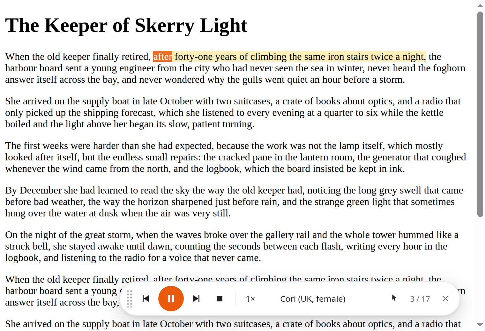
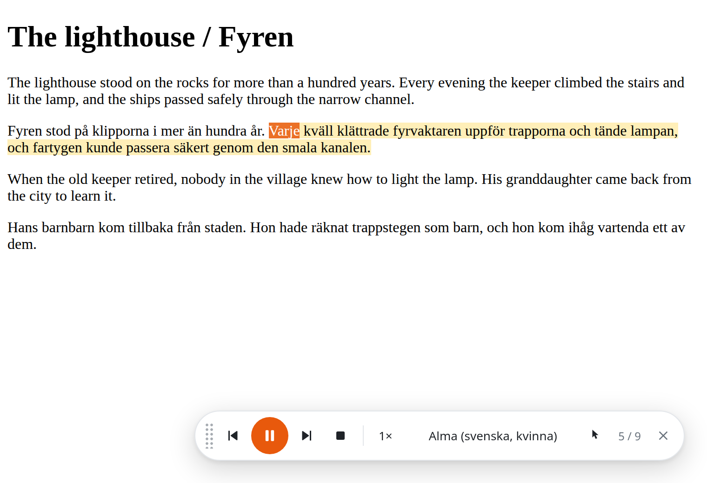
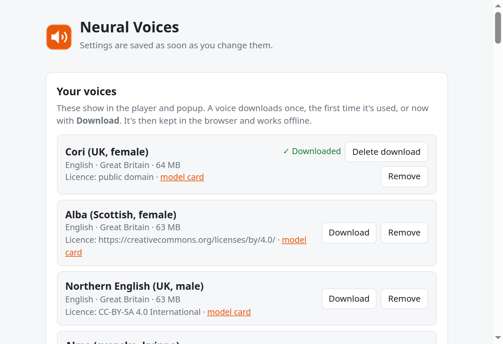

Articles, reports and manuals take a lot of screen reading.
The natural-sounding readers are often paid subscriptions.
Cloud voices get every word you listen to.



The only network use: downloading a voice once, from Piper's official voice collection. No accounts, no analytics.
| Voice in this video | Licence |
|---|---|
| Cori (English) | Public domain recordings from LibriVoxVoice by Bryce Beattie, from the Piper voice collection |
| Alma (Swedish) | CC BY 4.0, used unchangedBy yeagersthlm, trained on the NST dataset (Språkbanken) · huggingface.co/yeagersthlm/piper-voice-sv-alma |
Settings shows each voice's licence. Some voices are non-commercial or share-alike: check before you reuse their audio.
Free and open source. Load it in Firefox or Chromium.